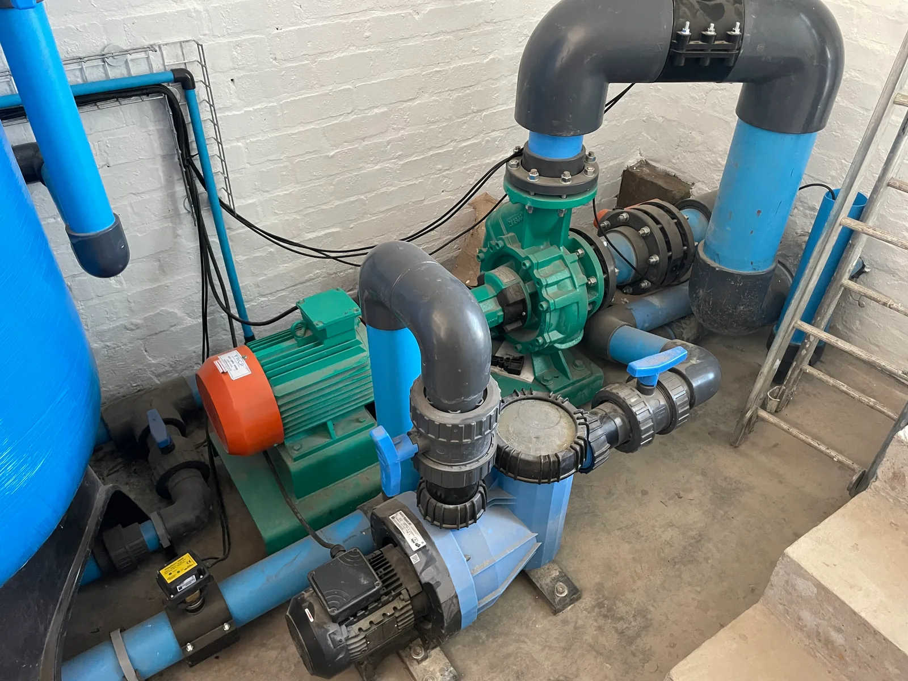
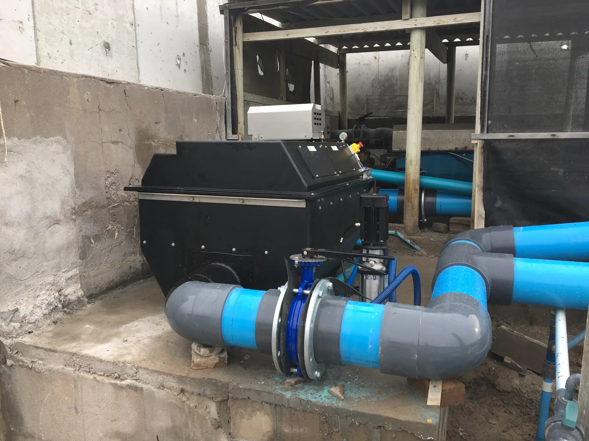
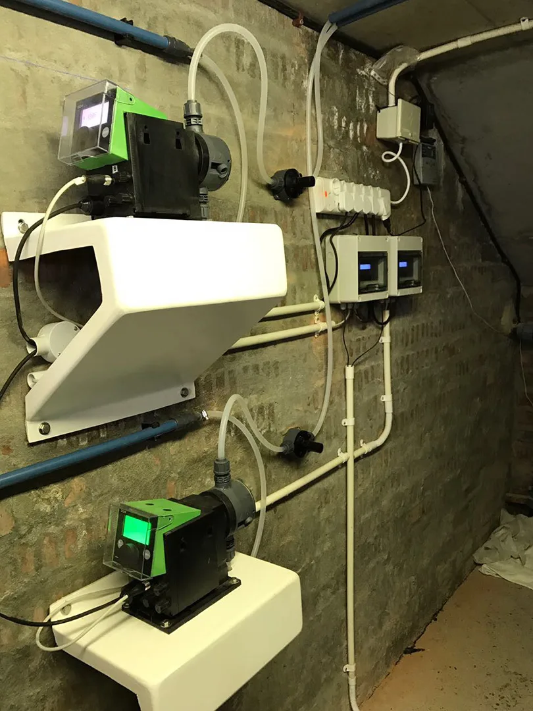
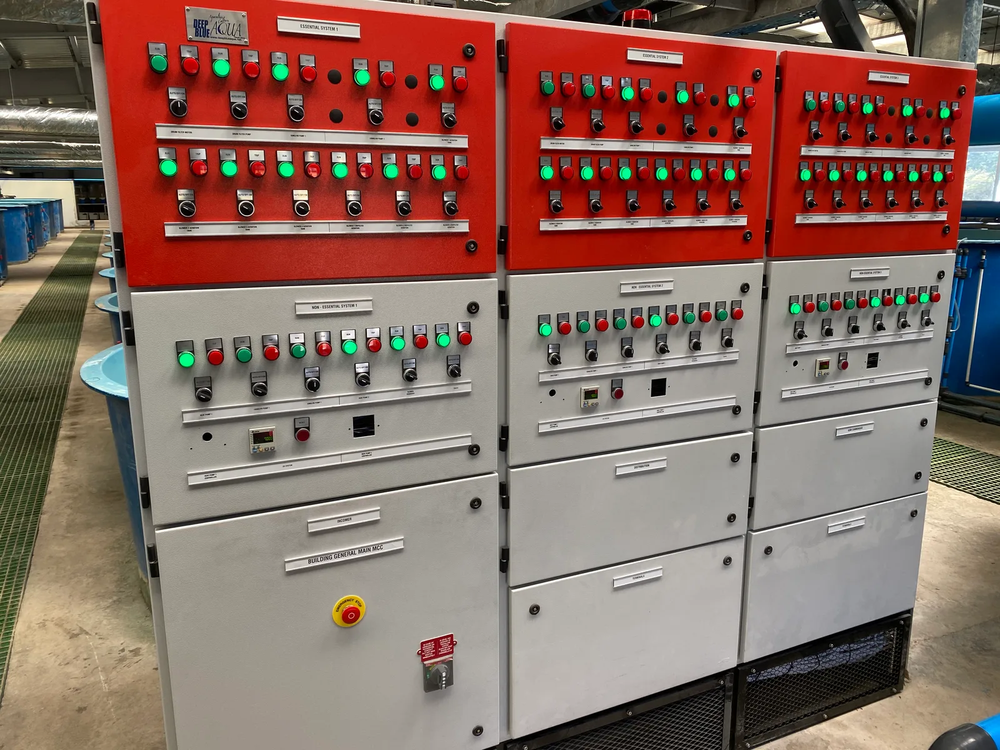
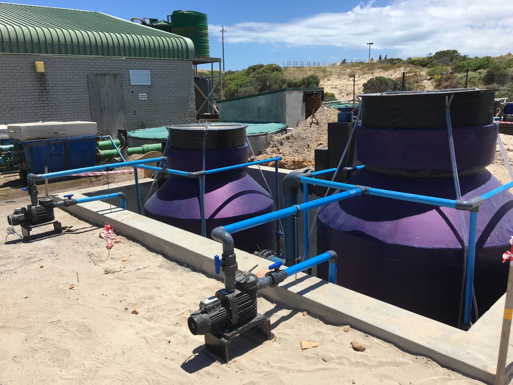
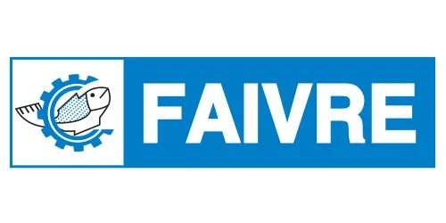
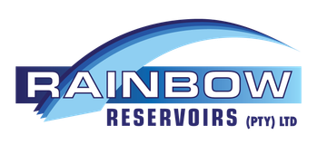
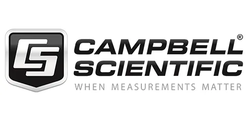
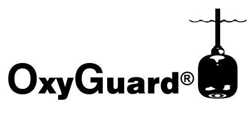

Engineered Water Systems
for Agriculture & Farms.
Reliable, chemical-free and high-efficiency water engineering across the Western Cape and Southern Africa. From difficult borehole water purification and automated irrigation filtration to livestock drinking biosecurity, farm dams, and mountain solar pump houses.
IRON & MANGANESE
REMOVALProtect drippers & sprayers
SOLAR PUMP
STATIONSOff-grid & remote reticulation
BIOSECURE
LIVESTOCK WATERUV & ozone disinfection
AQUAPONICS &
FARM DAMSFish rearing & nutrient reuse
Comprehensive Agricultural Water Capabilities

Filtration & MediaBorehole & Dam Water Treatment
Groundwater and open dams across the Western Cape frequently carry high levels of dissolved iron, manganese, suspended sediment, and tannin discoloration. We design and install multi-stage aeration, auto-backwashing catalytic media filters, and sediment filtration to safeguard farm infrastructure from clogging and mineral scaling.
- Catalytic oxidation for iron and manganese removal
- Automated high-rate multi-media & glass media filtration
- pH correction and turbidity clarification

Solids & Waste RemovalSuspended Solid & Organic Waste Removal
Protect irrigation lines, micro-emitters, and farm dams against heavy silt, suspended solids, and biological organic waste. We engineer high-performance mechanical filtration and clarification stages tailored to extract physical particulates and decaying organic debris before downstream distribution.
- High-efficiency suspended solid removal for rivers, dams, and boreholes
- Interception and extraction of organic debris to prevent dripper fouling
- Reduced backwash waste volumes and lower downstream maintenance

pH Control & OzonepH Control & Ozone Sterilization
Optimal crop nutrient uptake and livestock health depend heavily on stable water pH and chemical-free sterilization. We design and install automated pH correction dosing and powerful ozone sterilization systems that eradicate bacteria, viruses, and waterborne pathogens with zero toxic chemical residues.
- Automated pH buffering and corrective acid/alkali dosing skids
- High-output ozone sterilization destroying pathogens and biofilms
- Real-time sensor telemetry and ORP monitoring for precise control
 Solar & Off-Grid
Solar & Off-Grid
Solar Pump Stations & Water Reticulation
Reliable pumping in remote fields and rugged mountain terrain where grid power is unreliable or absent. We design complete solar photovoltaic pump houses, variable-frequency booster skids, automated pressure manifolds, and durable HDPE transfer lines.
- Turnkey solar-powered borehole and transfer pump stations
- Rainbow Reservoirs storage integration & level automation
- Variable Speed Drives (VSD) with automated dry-run protection
 Biological Systems
Biological Systems
Commercial Aquaponics & Farm Aquaculture
Combine high-yield freshwater fish production (tilapia, trout, catfish) with protected horticultural crops. Deep Blue Aqua designs commercial recirculating aquaponic systems that convert fish nutrient waste into clean fertilizer for crops, reducing water consumption by over 90% compared to traditional farming.
- Complete closed-loop biological mineralisation and deep-water culture (DWC)
- Farm dam aeration, destratification and fish rearing setups
- Full system sizing, stocking models, and ongoing biological support

Automation & SensorsRemote Water Monitoring & Automated Alarms
Water quality parameters directly affect crop health, soil salinity, and livestock performance. Using precision instrumentation from OxyGuard, Campbell Scientific, and Aqualabo, we provide 24/7 telemetry for electrical conductivity (EC), pH, dissolved oxygen, dam levels, and automated SMS alerts.
- Real-time multi-parameter probes and continuous data logging
- Automated alert dispatch via SMS and cloud dashboard
- Custom motor control centres (MCC) built in our Strand workshop

Effluent & RecyclingAgro-Processing & Winery Effluent Recovery
Treat and reuse washdown water from packhouses, dairies, and cellars. Our specialized biological contactors, clarification tanks, and disinfection skids treat wash effluent to agricultural discharge or re-use standards for landscape and crop irrigation.
- COD/BOD reduction and suspended solids clarification
- Non-chemical UV/ozone polishing for safe secondary irrigation
- Compliance with South African Department of Water & Sanitation standards
World-Class Technology for South African Agriculture
We engineer systems combining internationally trusted agricultural machinery and measurement brands with local manufacturing and servicing support from our Strand engineering facility.

Faivre Precision rotary drum filtration & machinery for fish culture systems
Rainbow Reservoirs Premium Zincalume agricultural water storage reservoirs
Campbell Scientific Rugged dataloggers, weather stations & telemetry
OxyGuard Continuous dissolved oxygen sensing & aeration controlHave a Farm Water Challenge? Let’s Engineer the Solution.
Whether you're struggling with iron-clogged drip lines, sizing a solar pumping system, or designing a commercial farm aquaponics setup, our technical desk in Strand is ready to assist with site assessments, design proposals, and equipment supply.